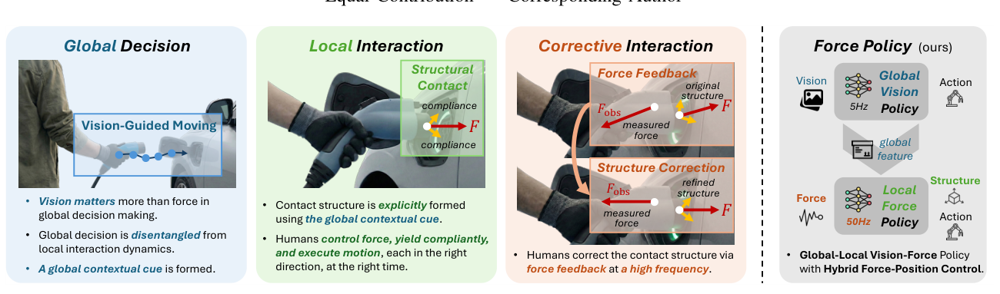
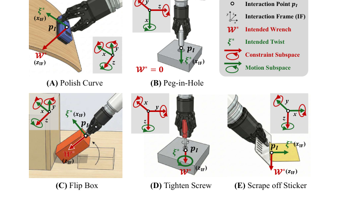
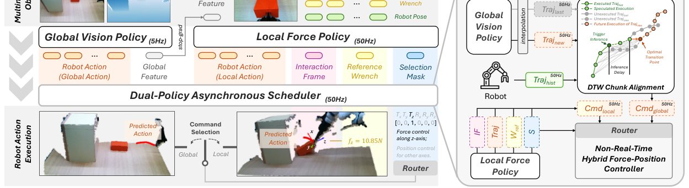
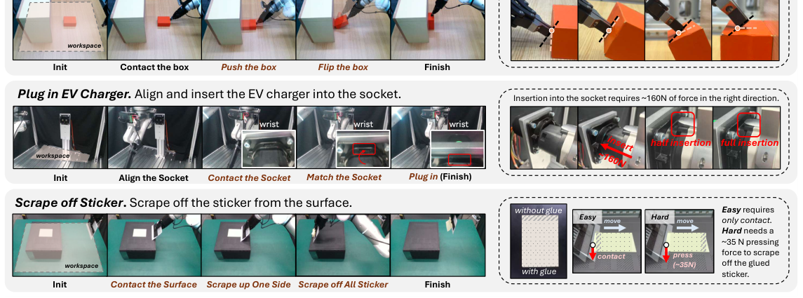

Background & Motivation
人類做「接觸密集(contact-rich)」操作時有清楚分工:視覺管全局(去哪、怎麼對齊),一旦接觸就靠高頻力回饋管局部(施力、順從、移動)。本文把這套組織方式搬進機器人:提出物理奠基的 Interaction Frame(IF,互動座標系) 明確表達接觸結構,並設計 Force Policy——一個 global vision policy(5Hz)+ local force policy(50Hz)的雙頻 vision-force 策略,用 hybrid force-position control 穩定接觸。真實機器人實驗全面勝過強力 vision-only 與 force-aware 基線。
Humans split labor in contact-rich manipulation: vision handles the global plan (where to go, how to align), and once contact happens, high-frequency force feedback governs the local interaction (apply force, yield, move). This paper ports that organization into robots: a physically grounded Interaction Frame (IF) makes contact structure explicit, and Force Policy—a dual-frequency vision-force policy pairing a global vision policy (5Hz) with a local force policy (50Hz)—stabilizes contact via hybrid force-position control. Real-robot experiments beat strong vision-only and force-aware baselines across the board.

如果只有 30 秒In 30 seconds
- 問題 — 學習式策略常把感知、規劃、接觸微調全揉進一個單體(monolithic)網路,在「擴大模型提升泛化」與「維持高頻穩定接觸」之間顧此失彼;控制派則假設已知任務結構、或只學控制器參數而非結構本身。
- Problem — Learning policies often fold perception, planning, and contact refinement into one monolithic net, trading global generalization against a stable high-frequency contact loop; control-centric methods instead assume a known task structure or learn only controller parameters, not the structure itself.
- 結構 — 提出物理奠基的 Interaction Frame:用環境剛度(stiffness)當幾何的代理,把互動空間分成「受約束(force 控)」與「可運動(position 控)」子空間;並給出從非理想真實示範中直接還原 IF 的方法。
- Structure — A physically grounded Interaction Frame: using environmental stiffness as a proxy for geometry, it splits the interaction space into a constrained (force-controlled) and an admissible-motion (position-controlled) subspace, plus a way to recover IF directly from non-ideal real demonstrations.
- 策略 — Force Policy:global vision policy(RISE-2,5Hz)在自由空間導航;一接觸,local force policy(50Hz)估 IF、輸出 selection mask + reference wrench,做 hybrid force-position control;再用 DTW 對齊的非同步排程器把兩頻率縫在一起。
- Policy — Force Policy: a global vision policy (RISE-2, 5Hz) navigates free space; on contact a local force policy (50Hz) estimates IF and emits a selection mask + reference wrench for hybrid force-position control, stitched together by a DTW-aligned asynchronous scheduler.
- 結果 — 三個真實接觸密集任務上成功率全面領先(如 EV 充電「插入」階段 65% vs 基線 0–10%);力調控更貼近示範、對未見物體泛化更好;IF 還原失敗率僅 3.6%。
- Results — On three real contact-rich tasks it leads across the board (e.g., EV-charger "plug in" 65% vs 0–10% for baselines); force is tracked closer to demos, with better generalization to unseen objects; IF recovery failure rate is just 3.6%.
領域脈絡Field context
古典機器人用 compliant control(impedance、admittance、hybrid force-position control)處理接觸,但多半依賴手調參數與相對準確的環境假設,在非結構化場景不夠穩健。學習式方法(RL、imitation)改由資料學互動策略,並引入力/觸覺/音訊等模態,但仍面臨兩難。
Classical robotics uses compliant control (impedance, admittance, hybrid force-position) for contact, but mostly relies on hand-tuned parameters and reasonably accurate environment assumptions, limiting robustness in unstructured settings. Learning methods (RL, imitation) instead learn interaction from data with force/tactile/audio modalities, yet the dilemma remains.
近期 force-aware 策略把力當觀測餵入(ForceVLA、TA-VLA)、或用 contact-phase 加權(FoAR)、或用 slow-fast 設計(RDP)。控制結構還原方面,經典 Task Frame Formalism(TFF) 提供力-運動子空間分解,但假設已知幾何與剛性接觸。本文站在這兩條線的交會點:把「該學的結構」變明確,再圍繞它蓋一個 global-local 策略。
Recent force-aware policies feed force as an observation (ForceVLA, TA-VLA), weight it by contact phase (FoAR), or use slow-fast designs (RDP). On control-structure recovery, the classic Task Frame Formalism (TFF) gives a force-motion subspace decomposition but assumes known geometry and rigid contact. This paper sits at their intersection: make the structure-to-be-learned explicit, then build a global-local policy around it.
這篇的定位不是「又一個更大的 VLA」,而是結構先行:先問「接觸任務真正要控制的自由度是什麼」,把它形式化成 IF,再讓策略去預測這個結構(而不只是動作)。這與純粹「把力塞進觀測、端到端硬學」的路線相反——它主張分工 + 明確的控制介面比單體大網路更適合接觸物理。
Its stance is not "yet another bigger VLA" but structure-first: ask what DoFs a contact task truly needs to control, formalize that as the IF, and have the policy predict this structure (not just actions). This is the opposite of "stuff force into observations and learn end-to-end"—it argues that division of labor + an explicit control interface suits contact physics better than a monolithic net.
核心洞見 · KEY INSIGHTSKEY INSIGHTS
帶走的不只是「成功率更高」,而是這幾個觀念:
What to take away is not "higher success rates" but these ideas:
- 視覺與力,各司其職、各在其頻率。 視覺負責全局(低頻 5Hz),力負責局部(高頻 50Hz);在自由空間力訊號多半是噪聲,硬塞進全局決策反而有害——因此把兩者解耦而非融合成單體。
- Vision and force: separate roles, separate rates. Vision owns the global scale (low-freq 5Hz), force owns the local scale (high-freq 50Hz); in free space force is mostly noise, and forcing it into global decisions hurts—so the two are decoupled, not fused into a monolith.
- 用「物理」定義互動座標系。 不靠已知幾何(TFF 的假設),而用環境剛度的主軸當幾何代理:剛度大的方向=約束(force 控)、剛度 \(\approx 0\) 的方向=可動(position 控)。這讓 IF 能在非結構化、未知幾何下被還原。
- Define the interaction frame from physics. Not from known geometry (TFF's assumption) but from the principal axes of environmental stiffness as a geometry proxy: high-stiffness directions = constraint (force control), near-zero stiffness = admissible motion (position control). This lets IF be recovered in unstructured, unknown-geometry settings.
- 從「功率」拆出理想 twist / wrench。 真實示範非理想,觀測的力與運動含寄生分量。用功率 \(P=W^\top\xi\) 拆成耗散殘差(摩擦,twist 主導)與結構殘差(剛度,wrench 主導),據此正交化還原 \(\xi^*\) 或 \(W^*\)。
- Extract ideal twist/wrench from power. Real demos are non-ideal; observed force/motion carry parasitic parts. Decompose power \(P=W^\top\xi\) into a dissipative residual (friction, twist-dominant) and a structural residual (stiffness, wrench-dominant), and orthogonalize to recover \(\xi^*\) or \(W^*\) accordingly.
- 讓策略「預測結構」,而非只預測動作。 local policy 輸出 IF + selection mask + reference wrench + 動作 chunk,直接對接 hybrid force-position 控制器。selection mask 還一石二鳥,兼當 global↔local 的隱式 router。
- Have the policy "predict structure," not just actions. The local policy outputs IF + selection mask + reference wrench + an action chunk, feeding a hybrid force-position controller directly. The mask does double duty as an implicit global↔local router.
- 模型無關的延遲補償很關鍵。 雙頻非同步會產生 chunk 跳變;用 DTW 波點丟棄(waypoint dropout) 做延遲對齊、加上加速度連續規劃,減少 jerk、提升力感測保真度,且不綁定任何模型架構。
- Model-agnostic latency compensation matters. Dual-rate asynchrony causes chunk jumps; a DTW waypoint-dropout aligns for latency, and acceleration-continuous planning cuts jerk and improves force-sensing fidelity—without tying to any model architecture.
Problem Diagnosis
現況 vs 痛點Status quo vs pain points
| 現有做法Existing approach | 它的痛點Its pain point |
|---|---|
| 古典 compliant controlClassic compliant control (impedance / admittance / hybrid) | 手調參數 + 需相對準確的環境/接觸模型;非結構化場景不穩。Hand-tuned params + needs a fairly accurate environment/contact model; brittle in unstructured settings. |
| 單體 vision-force 策略Monolithic vision-force policies (ForceVLA, TA-VLA) | 把力當觀測直接串接;自由空間力是噪聲,污染全局決策,有時甚至比純視覺 backbone 更差。Concatenate force as an observation; free-space force is noise that pollutes global decisions, sometimes underperforming the vision-only backbone. |
| 低頻 force-awareLow-freq force-aware (FoAR) | 反應頻率不足,難處理快速接觸瞬變。Insufficient reactivity for fast contact transients. |
| Slow-fast (RDP) | 低階 force decoding 直接依附高階 latent chunk;高階誤判無接觸而實際接觸時,低階把 OOD 力訊號對映成錯誤動作,難以修正。Low-level force decoding is tied to the high-level latent chunk; if the high level assumes no contact but contact occurs, the low level maps OOD force to wrong actions and can't correct. |
| TFF / 結構還原structure recovery (ACP, ForceMimic…) | 假設已知幾何/剛性接觸,或只學控制器參數、只沿單一方向做力控,無法涵蓋多軸約束(如 peg insertion)。Assume known geometry/rigid contact, or learn only controller params / single-axis force control—can't cover multi-axis constraints (e.g., peg insertion). |
兩個核心問題:(1) 如何實現 global-local 組織,讓全局引導能泛化、局部互動能穩定?(2) 如何把任務的互動結構明確表達,使其能跨不同接觸技能遷移?
Two core questions: (1) How to realize a global-local organization so global guidance generalizes while local interaction stays stable? (2) How to represent a task's interaction structure explicitly so it transfers across contact skills?
Gap 表 — 誰缺什麼,Force Policy 怎麼補Gap table — who lacks what, and how Force Policy fills it
| 方法Method | 限制Limitation | Force Policy 如何補How Force Policy fills it |
|---|---|---|
| ForceVLA / TA-VLA 單體、力當觀測monolithic, force as obs. |
力污染全局決策。Force pollutes global decisions. | 解耦 global(僅視覺)/ local(力),全局不被噪聲力干擾。Decouple global (vision-only) from local (force); the global stays insulated from noisy force. |
| FoAR | 頻率太低。Too low frequency. | local force policy 跑 50Hz,足以反應接觸瞬變。The local force policy runs at 50Hz, fast enough for transients. |
| RDP | 快慢層耦合,難修正錯誤高階意圖。Fast-slow coupling; hard to fix wrong high-level intent. | local 以全局特徵為條件但獨立決策;global 可即插即換(任意 visuomotor / VLA)。Local is conditioned on a global feature yet decides independently; the global is plug-and-play (any visuomotor/VLA). |
| TFF / ACP / ForceMimic | 需已知幾何 / 只單軸力控。Need known geometry / single-axis force only. | 用剛度定義 IF,支援多軸約束,並能從真實示範還原。Define IF from stiffness, support multi-axis constraints, recoverable from real demos. |
注意這裡的痛點分兩類:「架構層」(力與視覺該怎麼組織)與「結構層」(接觸的可控自由度怎麼表達)。本文的巧思是用同一個 IF 同時解兩者——IF 既是結構(給控制器的 selection mask/wrench),又天然導出 global↔local 的切換訊號。這種「一個表示打通結構與排程」的設計,是它比堆疊模組更優雅的地方。
The pains split in two: an architecture layer (how to organize force vs vision) and a structure layer (how to express a contact's controllable DoFs). The trick is to solve both with one IF—it is the structure (a selection mask/wrench for the controller) and it naturally yields the global↔local switching signal. "One representation unifying structure and scheduling" is why it's more elegant than stacking modules.
Core Method
第一塊拼圖:Interaction Frame(物理視角)Piece 1: the Interaction Frame (a physical view)
在互動點 \(p_I\) 用對稱剛度矩陣 \(\mathbf{K}_{\text{env}}(p_I)\) 描述局部環境反應。對其做譜分解得主剛度 \(\lambda_i\) 與主軸 \(q_i\),把互動空間切成兩塊:
At interaction point \(p_I\), model the local environment response by a symmetric stiffness \(\mathbf{K}_{\text{env}}(p_I)\). Its spectral decomposition yields principal stiffnesses \(\lambda_i\) and axes \(q_i\), splitting the interaction space into two:
- 約束子空間 \(\mathcal{U}\):高剛度 \(\lambda_i\gg 0\) 的方向 → 由力控制(force control)。
- Constraint subspace \(\mathcal{U}\): high-stiffness \(\lambda_i\gg 0\) directions → governed by force control.
- 可運動子空間 \(\mathcal{T}\):剛度 \(\lambda_i\approx 0\) 的方向 → 由位置控制(position control)。
- Admissible-motion subspace \(\mathcal{T}\): near-zero stiffness \(\lambda_i\approx 0\) directions → governed by position control.
關鍵一步:互動是目標導向的。引入 task intent \(\{\xi^*, \mathcal{W}^*\}\)——意圖 twist \(\xi^*\)(在 \(\mathcal{T}\) 內驅動運動)與意圖 wrench \(\mathcal{W}^*\)(頂住 \(\mathcal{U}\) 的約束)。把剛度主軸「錨定」到這些意圖上,即定義 IF:
Key step: interaction is goal-directed. Introduce a task intent \(\{\xi^*, \mathcal{W}^*\}\)—an intended twist \(\xi^*\) (driving motion within \(\mathcal{T}\)) and an intended wrench \(\mathcal{W}^*\) (pushing against the constraint \(\mathcal{U}\)). Anchoring the stiffness axes to these intents defines the IF:
具體:IF 的 \(z\)-軸 = 主導 wrench 方向;\(x\)-軸 = 把 \(\xi^*\) 投影到 \(z\) 的正交平面;退化情形(靜態壓持、共線螺旋)則以右手定則補齊。這保留了 TFF 的正交分解,卻用環境順從性取代幾何先驗——天生適合非結構化任務。
Concretely: the IF's \(z\)-axis = the dominant wrench direction; its \(x\)-axis = \(\xi^*\) projected onto the plane orthogonal to \(z\); degenerate cases (static holding, collinear screwing) are completed by the right-hand rule. This keeps TFF's orthogonal decomposition but replaces geometric priors with environmental compliance—inherently suited to unstructured tasks.

第二塊:從非理想示範還原 IFPiece 2: recovering IF from non-ideal demos
理想剛性無摩擦接觸下,觀測 twist/wrench 與意圖完全對齊,功率為零:\(P=\mathcal{W}^\top\xi=0\)。但真實示範不理想——意圖 twist 會誘發沿其方向的寄生 wrench \(\mathcal{W}_c\),意圖 wrench 會誘發寄生 twist \(\xi_c\)。展開功率:
Under ideal rigid frictionless contact, observed twist/wrench align with intent and power is zero: \(P=\mathcal{W}^\top\xi=0\). Real demos are non-ideal—the intended twist induces a parasitic wrench \(\mathcal{W}_c\) along its direction, and the intended wrench induces a parasitic twist \(\xi_c\). Expanding power:
兩項對應不同物理來源:\(\mathcal{W}_c^\top\xi^*\) 是 \(\mathcal{T}\) 內的耗散殘差(摩擦/黏滯,沿運動方向);\(\mathcal{W}^{*\top}\xi_c\) 是 \(\mathcal{U}\) 內的結構殘差(剛度/順從變形,沿施力方向)。於是:
The two terms have distinct physical origins: \(\mathcal{W}_c^\top\xi^*\) is a dissipative residual in \(\mathcal{T}\) (friction/viscous, along motion); \(\mathcal{W}^{*\top}\xi_c\) is a structural residual in \(\mathcal{U}\) (stiffness/compliant deflection, along force). Hence:
也就是「哪個殘差主導,就用另一個量去正交化它」。判斷「哪個主導」的方式很務實:用 Gemini 3 Pro 讀初始畫面 + 任務描述,依高層語義分類主導功率來源,再套對應公式。[導讀補充] 這等於把一個難以量化的物理判斷,外包給多模態 LLM 的常識。
I.e., "whichever residual dominates, orthogonalize it against the other quantity." Deciding "which dominates" is pragmatic: prompt Gemini 3 Pro with the initial frame + task description to classify the dominant power source semantically, then apply the matching formula. [guide note] This effectively outsources a hard-to-quantify physical judgment to a multimodal LLM's common sense.
四種任務模式 → selection maskFour task modes → selection mask
依 IF 對齊後的 twist/wrench 特徵,把互動片段分成四類,對應到 hybrid control 的 selection mask \(S\in\{0,1\}^6\)(\(S_i=1\) 力控、\(S_i=0\) 位控),順序為 \([T_x,T_y,T_z,R_x,R_y,R_z]\):
By the IF-aligned twist/wrench characteristics, interaction patches fall into four modes, mapping to a hybrid-control selection mask \(S\in\{0,1\}^6\) (\(S_i=1\) force, \(S_i=0\) position), ordered \([T_x,T_y,T_z,R_x,R_y,R_z]\):
| 模式Mode | 判據Criterion | Selection mask \(S\) |
|---|---|---|
| Free | 無持續接觸 \(\lVert\mathcal{W}\rVert\approx 0\)no contact, \(\lVert\mathcal{W}\rVert\approx 0\) | [0,0,0,0,0,0] |
| Surface | 單一法向約束 \(\lVert f_z\rVert\gg\lVert f_{xy}\rVert\)one normal constraint \(\lVert f_z\rVert\gg\lVert f_{xy}\rVert\) | [0,0,1,0,0,0] |
| Insertion | 強摩擦各向異性 \(\lVert f_x\rVert\gg\lVert f_{yz}\rVert\)strong friction anisotropy \(\lVert f_x\rVert\gg\lVert f_{yz}\rVert\) | [0,1,1,0,1,1]* |
| Rotation | 旋轉主導(如擰螺絲)\(\lVert\omega_z\rVert\gg 0,\ \lVert f_z\rVert\gg 0\)rotation-dominant (screwing) \(\lVert\omega_z\rVert\gg 0,\ \lVert f_z\rVert\gg 0\) | [0,0,1,0,0,0]* |
* 理論上 insertion 的軸向平移/旋轉屬 \(\mathcal{T}\)、screw 只有軸向旋轉屬 \(\mathcal{T}\);但實務上仍對這些自由度加力/力矩控制,以應付高摩擦、防止卡死(jamming)。
* In theory insertion's axial translation/rotation lie in \(\mathcal{T}\), and screwing's only axial rotation is in \(\mathcal{T}\); in practice force/torque control is still applied to these DoFs to handle high friction and prevent jamming.
第三塊:Force Policy 架構Piece 3: the Force Policy architecture

Local force policy \(\Pi_{\text{local}}\)——像人的手沿桌緣滑動:接觸後不需精準視覺,只要全局脈絡 + 高頻 proprioception/力回饋:
Local force policy \(\Pi_{\text{local}}\)—like a finger sliding along a table edge: after contact you need no precise vision, just the global context plus high-frequency proprioception/force feedback:
其中 \(\phi(I_{t'})\) 是 global policy 在 \(t'\le t\) 更新的全局脈絡(decouple 兩者的推論頻率)。每個局部動作顯式參數化力互動:
where \(\phi(I_{t'})\) is the global context updated by the global policy at \(t'\le t\) (decoupling their inference rates). Each local action explicitly parameterizes the force interaction:
Global vision policy \(\Pi_{\text{global}}\) 用 RISE-2(純 3D 視覺 visuomotor)實例化,自由空間直接出動作;接觸時交棒給 local,只提供全局特徵 \(\phi\)。Router 不另設模組——直接重用 local 預測的 selection mask 當隱式路由:\(S\) 出現非零 → 切到力控;非預期的意外接觸不觸發 \(S\),控制權留在 global。local 內部:wrist image 經 ResNet、proprioception 經 GRU,皆以 \(\phi\) 做 FiLM 條件化,gated 融合後用 MIP head 去噪動作、MLP head 出 IF/wrench/mask。
Global vision policy \(\Pi_{\text{global}}\) is instantiated with RISE-2 (a 3D-vision visuomotor policy), acting directly in free space and handing off to local on contact—only supplying the global feature \(\phi\). The router adds no module: it reuses the local policy's predicted selection mask as an implicit signal—non-zero \(S\) → switch to force control; unintended contacts don't trigger \(S\), so control stays global. Inside local: the wrist image goes through a ResNet and proprioception through a GRU, both FiLM-conditioned on \(\phi\), gated-fused, then a MIP head denoises the action and an MLP head outputs IF/wrench/mask.
第四塊:雙頻非同步排程器(部署)Piece 4: the dual-policy asynchronous scheduler (deployment)
- 非同步推論/執行:多執行緒把推論與軌跡執行重疊,預先發起推論;兩策略輸出先插值到統一 50Hz,router 加 hysteresis 抑制切換抖動。
- Async inference/execution: multi-threading overlaps inference with trajectory execution, launching inference preemptively; both outputs are interpolated to a unified 50Hz, and the router uses hysteresis to suppress switching jitter.
- DTW chunk 對齊:延遲會讓相鄰 chunk 跳變。用 Dynamic Time Warping 把預測軌跡對齊到近期執行歷史,找最佳進入索引、丟棄前置波點,消除延遲造成的不連續——不改訓練、不綁架構,比 action inpainting 更輕量。
- DTW chunk alignment: latency causes jumps between chunks. Dynamic Time Warping aligns the predicted trajectory to recent execution history, finds an optimal entry index, and drops preceding waypoints—removing latency-induced discontinuities without changing training or architecture, lighter than action inpainting.
- 加速度連續規劃:高階連續性抑制 jerk、降低慣性擾動,提升力感測保真度;最後交給非即時 hybrid force-position controller 執行。
- Acceleration-continuous planning: higher-order continuity suppresses jerk and inertial disturbances, improving force-sensing fidelity; the result is dispatched to a non-real-time hybrid force-position controller.
符號白話對照Symbols in plain words
| \(\Sigma(p_I)\) | Interaction Frame:互動點的局部座標系,\(z\)=施力方向、\(x\)=運動方向。Interaction Frame: the local basis at the contact, with \(z\)=force axis, \(x\)=motion axis. |
| \(\xi=[v^\top,\omega^\top]^\top\) | twist:末端的線速度 \(v\) + 角速度 \(\omega\)。\(\xi^*\)=意圖 twist。twist: end-effector linear \(v\) + angular \(\omega\) velocity. \(\xi^*\)=intended twist. |
| \(\mathcal{W}=[f^\top,m^\top]^\top\) | wrench:力 \(f\) + 力矩 \(m\)(已重力補償)。\(\mathcal{W}^*\)=意圖 wrench。wrench: force \(f\) + moment \(m\) (gravity-compensated). \(\mathcal{W}^*\)=intended wrench. |
| \(\mathbf{K}_{\text{env}}\) | 環境剛度(對稱);其主軸=局部幾何方向,是 IF 的物理來源。Environmental stiffness (symmetric); its principal axes = local geometry, the physical source of IF. |
| \(S\in\{0,1\}^6\) | selection mask:每個自由度選力控(1)或位控(0);也當隱式 router。Selection mask: per-DoF force (1) vs position (0) control; also the implicit router. |
| \(\mathcal{W}^{\text{ref}}\) | reference wrench:接觸時力控方向要追蹤的目標力。Reference wrench: the target force to track along force-controlled axes on contact. |
| \(\phi(I_{t'})\) | global policy 給的全局視覺脈絡,條件化 local(FiLM)。Global visual context from the global policy, conditioning local via FiLM. |
Experimental Evidence

成功率(Tab.II,累積、分階段)Success rates (Tab.II, accumulative, stage-wise)
| 方法Method | Flip (翻) | EV plug in (插) | Scrape Hard (刮淨) |
|---|---|---|---|
| RISE-2 (vision) | 42.5% | 0.0% | 10.0% |
| π0.5 (vision) | 52.5% | 0.0% | 20.0% |
| RDP | 57.5% | 5.0% | 20.0% |
| FoAR | 60.0% | 10.0% | 20.0% |
| ForceVLA | 30.0% | 0.0% | 0.0% |
| TA-VLA | 62.5% | 0.0% | 10.0% |
| Force Policy (ours) | 95.0% | 65.0% | 90.0% |
最大增益出現在需要精準快速力調控的階段——EV 插入(65% vs 至多 10%)、刮淨(90% vs 至多 20%)。多個 force-aware 基線在最難階段幾乎歸零;ForceVLA 甚至常輸給純視覺 backbone(把噪聲力串進觀測反傷全局)。
The biggest gains land in phases needing precise, rapid force regulation—EV insertion (65% vs ≤10%) and full scrape-off (90% vs ≤20%). Several force-aware baselines collapse to near-zero on the hardest phase; ForceVLA often even loses to a vision-only backbone (noisy force in observations hurts the global).
力調控 & 泛化Force regulation & generalization
| 評測Eval | Force Policy | 對照Baselines |
|---|---|---|
| 力調控 / Push and Flip 被推距離 \(d\)(cm)↓,越小越好 (示範用 ~15N;推動重物需 ~45N)Force reg. / Push and Flip pushed distance \(d\)(cm)↓, lower is better (demos ~15N; moving the heavy object needs ~45N) | 0.00 | π0.5 0.00 · FoAR 0.25 · ForceVLA 0.50 · RISE-2 0.86 · RDP 1.13 · TA-VLA 1.25 (施力過大)(excessive force) |
| 泛化 / 未見物體(6 組) 成功數 /5Generalization / unseen objects (6 sets) successes /5 | 5,5,4,4,3,2 | 基線常大面積 0/5(如 RDP、FoAR 多為 0/5)Baselines often mostly 0/5 (RDP, FoAR largely 0/5) |
力調控:本法緊貼示範力曲線(Fig.5),基線常力震盪、下壓不足或施力過大而失敗。泛化:一個關鍵觀察是——RISE-2 在新物體上常 0% 成功,但它幾乎都能導航到接近接觸區;失敗發生在「自由→接觸」的臨界轉換。Force Policy 繼承了視覺 backbone 的到位泛化,再由 local force policy 接手穩定建立接觸。
Force: our method hugs the demo force profile (Fig.5); baselines fail via oscillation, insufficient downforce, or excessive force. Generalization: a key observation—RISE-2 often scores 0% on novel objects yet nearly always reaches the near-contact region; failure occurs at the free→contact transition. Force Policy inherits the visual backbone's reaching generalization, then the local force policy takes over to robustly establish contact.
消融:IF 還原 & 排程器(Q4/Q5)Ablations: IF recovery & scheduler (Q4/Q5)
| IF 還原法(Scrape 任務)IF recovery (Scrape task) | 失敗率(>20°)↓Failure rate (>20°)↓ |
|---|---|
| Power (power-min. [63]) | 61.2% |
| Analytic (statistical fusion [58]) | 37.6% |
| Wrench-only [25,53] | 4.9% |
| Twist-only | 4.0% |
| Ours (adaptive) | 3.6% |
在刮貼紙(摩擦耗散主導)這題,twist-only 與本法優於 wrench-only;本法再靠「刮前短暫下壓(結構殘差主導)」的自適應切換略勝一籌。關鍵下游證據:改用 wrench-only 標的 IF 來訓練 Force Policy,成功率從 90% 掉到 50%——證明「更準的 IF 標註 → 更好的策略」。語義分類準確率 100% / 92% / 98%。
On scraping (dissipation-dominant), twist-only and ours beat wrench-only; ours edges ahead by adaptively catching the brief pre-scrape press (structural-dominant). Key downstream evidence: training Force Policy with wrench-only IF labels drops success from 90% to 50%—more accurate IF labels → a better policy. Semantic-classification accuracy: 100% / 92% / 98%.
排程器(Q5):用 SPARC(↑ 越平滑)衡量,加上排程器後線性 SPARC \(-4.515\to-3.935\)、角度 \(-2.640\to-2.967\),動作與力的 jerk 都下降,軌跡更平滑。
Scheduler (Q5): by SPARC (↑ = smoother), the scheduler moves linear SPARC \(-4.515\to-3.935\) and angular \(-2.640\to-2.967\), reducing both motion and force jerk for smoother trajectories.
這些實驗證明 / 不證明什麼What the experiments do / don't prove
證明:在接觸密集、需精準力的階段,把力控結構化 + 分頻分工,能同時提升成功率、力保真度與泛化;更準的 IF 標註確實轉化為更好的策略。
Proves: on contact-rich, force-critical phases, structuring force control + splitting roles by rate lifts success, force fidelity, and generalization together; and more accurate IF labels do translate into a better policy.
未證明:僅 3 個任務、每任務 50 筆示範、每設定 10–20 trials;都是靜態、拓樸不變的接觸(無斷裂/大形變/torque 控)。跨更廣任務族、更大資料、長時序漂移等未測。
Doesn't prove: only 3 tasks, 50 demos each, 10–20 trials per setting; all static, topology-invariant contact (no fracture/large deformation/torque control). Broader task families, larger data, and long-horizon drift are untested.
Critical Reading
可被質疑的點Contestable points
- 評測規模偏小:僅 3 個任務、每任務 50 示範、每設定 10–20 trials。成功率差異雖大,但 10 trials 的統計解析度有限(一次成敗 = 10%),缺乏多 seed / 信賴區間。對一個主打「泛化」的方法,任務多樣性仍偏窄。
- Small evaluation scale: only 3 tasks, 50 demos each, 10–20 trials per setting. Gaps are large, but 10 trials gives coarse resolution (one success = 10%), with no multi-seed / confidence intervals. For a method pitched on "generalization," task diversity is still narrow.
- 對外部 LLM 的隱性依賴:IF 還原的「哪種殘差主導」是用 Gemini 3 Pro 語義分類決定的。這把一個物理判斷外包給閉源模型:準確率 92–100% 看似高,但只在 3 個任務上量測;分類錯誤如何隨任務分佈變化、是否可離線複現,都未探討。
- Hidden reliance on an external LLM: "which residual dominates" in IF recovery is decided by Gemini 3 Pro semantic classification. This outsources a physical judgment to a closed model: 92–100% accuracy looks high but is measured on 3 tasks only; how errors scale with task distribution, or whether it's offline-reproducible, is unexplored.
- 理論假設相當強:IF 的可對角化性(Theorem 1)建立在 Hertzian 接觸 + 局部保守 + 拓樸不變 + 反射對稱之上。真實接觸(邊角、多點、非對稱摩擦)未必滿足;論文把不滿足的情況直接排除在 scope 外,而非量化其退化。
- Strong theoretical assumptions: IF's diagonalizability (Theorem 1) rests on Hertzian contact + local conservatism + topology-invariance + reflectional symmetry. Real contacts (edges, multi-point, asymmetric friction) may violate these; the paper excludes such cases from scope rather than quantifying the degradation.
- 增益來源難拆解:Force Policy 同時引入了「IF 結構」「global-local 分工」「50Hz 力控」「DTW 排程器」。缺乏把這四者逐一移除的完整消融——例如「同樣分工但用單軸力控」對比,無法斷定成功率主要來自哪一塊。
- Hard to attribute the gain: Force Policy bundles "IF structure," "global-local split," "50Hz force control," and "DTW scheduler" at once. There's no full ablation removing each in turn—e.g., "same split but single-axis force control"—so one can't pin down which piece drives the success.
- 基線公平性:VLA 類基線(π0.5、ForceVLA、TA-VLA)本是大規模預訓練模型,在此僅用每任務 50 筆示範微調,可能水土不服(ForceVLA 常低於 RISE-2 即是信號)。這究竟是「方法本身弱」還是「資料量不匹配」,值得保留判斷。
- Baseline fairness: VLA baselines (π0.5, ForceVLA, TA-VLA) are large pretrained models fine-tuned here on just 50 demos per task, which may not suit them (ForceVLA often below RISE-2 is a tell). Whether that reflects "the method is weak" or "a data mismatch" is worth reserving judgment on.
- 硬體門檻:方法綁定 高階力控機器人(Flexiv Rizon)+ 6-DoF 力矩感測 + 帶力回饋的遙操作,並需非即時 hybrid controller。對只有位置控制手臂、無 F/T 感測的實驗室,重現門檻不低。
- Hardware barrier: it requires a high-end force-controlled arm (Flexiv Rizon) + a 6-DoF F/T sensor + force-feedback teleoperation, plus a non-real-time hybrid controller. For labs with position-only arms and no F/T sensing, reproduction is non-trivial.
給讀書會 / 審稿的犀利問題Sharp questions for a reading group / review
- 四合一的拆解:若固定 global-local 分工,只把「IF + 多軸 mask」換成 ForceMimic 式單軸力控,成功率掉多少?增益主要來自結構、分工、頻率,還是排程器?
- Decompose the bundle: fixing the global-local split, if "IF + multi-axis mask" is swapped for ForceMimic-style single-axis force control, how much drops? Is the gain mainly from structure, split, rate, or scheduler?
- LLM 分類的必要性:能否用純物理判據(如比較兩殘差量級)取代 Gemini?若能,方法就不必依賴閉源 LLM;若不能,說明物理判據不足以區分,值得深究為何。
- Is the LLM necessary? Could a purely physical criterion (comparing the two residual magnitudes) replace Gemini? If yes, the method needn't depend on a closed LLM; if no, that says the physics alone can't disambiguate—worth digging into why.
- 假設破裂時的行為:遇到邊角接觸、多點接觸、明顯非對稱摩擦(違反 Hertzian/對稱假設)時,IF 還原與策略如何退化?high-freq 修正真能救回多少?
- Behavior when assumptions break: at edge/multi-point contact or clearly asymmetric friction (violating Hertzian/symmetry), how do IF recovery and the policy degrade? How much can high-freq correction actually recover?
- 統計嚴謹度:10 trials、單 seed 下,95% 這類數字的變異有多大?能否給多 seed 或 bootstrap 區間,讓「全面領先」更站得住?
- Statistical rigor: with 10 trials and a single seed, how variable are figures like 95%? Could multi-seed or bootstrap intervals make "leads across the board" more defensible?
- 可移植性:把 global policy 從 RISE-2 換成任意 VLA 時,\(\phi\) 特徵介面是否真「即插即用」?不同 backbone 的 \(\phi\) 語義差異會不會讓 local policy 需重訓?
- Portability: swapping the global policy from RISE-2 to an arbitrary VLA—is the \(\phi\) feature interface truly plug-and-play? Would differing \(\phi\) semantics across backbones force the local policy to be retrained?
Takeaways
對你研究的啟發Implications for your research
- 「結構先行」而非「端到端硬學」:當任務有清楚物理結構(如接觸的可控自由度),與其把一切丟進大網路,不如先把結構形式化、讓策略去預測結構,再對接成熟的控制器。這對接觸操作、裝配、甚至更廣的物理互動任務都適用。
- "Structure-first" over "end-to-end brute force": when a task has clear physical structure (e.g., a contact's controllable DoFs), rather than dumping everything into a big net, formalize the structure and have the policy predict it, then hand off to a mature controller. This applies to contact manipulation, assembly, and broader physical-interaction tasks.
- 按「資訊尺度」分頻分工:不同模態在不同尺度最有用(視覺=全局低頻、力=局部高頻)。與其融合,不如解耦並各自跑最合適的頻率,再用輕量、模型無關的排程器(如 DTW 對齊)縫合——這個模式可移植到任何多頻率、多模態的控制系統。
- Split roles by "information scale": modalities are useful at different scales (vision = global/low-freq, force = local/high-freq). Rather than fuse, decouple and run each at its natural rate, stitched by a lightweight, model-agnostic scheduler (e.g., DTW alignment)—a pattern portable to any multi-rate, multi-modal control system.
- 用 LLM 做「難以量化的高層判斷」:本文用 Gemini 判斷「摩擦主導或剛度主導」,是「把物理常識外包給多模態模型」的實例。值得借用,但務必量測其錯誤率並設計 fallback(此處靠 high-freq 修正)。
- Use an LLM for "hard-to-quantify high-level judgments": using Gemini to decide "friction- vs stiffness-dominant" exemplifies outsourcing physical common sense to a multimodal model. Borrowable—but measure its error rate and design a fallback (here, high-freq correction).
值得引用的點What's worth citing
| 當你要主張…When you claim… | 就引這篇Cite this for |
|---|---|
| 「把力當觀測融合可能有害」"fusing force as an observation can hurt" | 引其 ForceVLA/TA-VLA 有時輸給純視覺的觀察 + global-local 解耦論述。Cite the observation that ForceVLA/TA-VLA sometimes lose to vision-only + the global-local decoupling argument. |
| 「可從示範還原多軸接觸結構」"multi-axis contact structure is recoverable from demos" | 引 IF 的物理定義 + 功率殘差分解 + wrench-only→90%/50% 的下游證據。Cite the physical IF definition + power-residual decomposition + the wrench-only 90%/50% downstream evidence. |
| 「模型無關的延遲/jerk 補償」"model-agnostic latency/jerk compensation" | 引 DTW 波點丟棄排程器與 SPARC 平滑度增益。Cite the DTW waypoint-dropout scheduler and the SPARC smoothness gains. |
Force Policy 把接觸操作重新組織成「視覺管全局(5Hz)、力覺管局部(50Hz)」的分工,並用物理奠基的 Interaction Frame 把「該控哪些自由度」變成可還原、可預測的控制介面,直接對接經典 hybrid force-position controller。它證明:對接觸物理而言,明確的結構 + 分工,勝過把力硬塞進單體大網路。
Force Policy reorganizes contact manipulation into a split—vision owns the global (5Hz), force owns the local (50Hz)—and uses a physically grounded Interaction Frame to turn "which DoFs to control" into a recoverable, predictable control interface feeding a classic hybrid force-position controller. It shows that for contact physics, explicit structure + division of labor beats cramming force into a monolithic net.